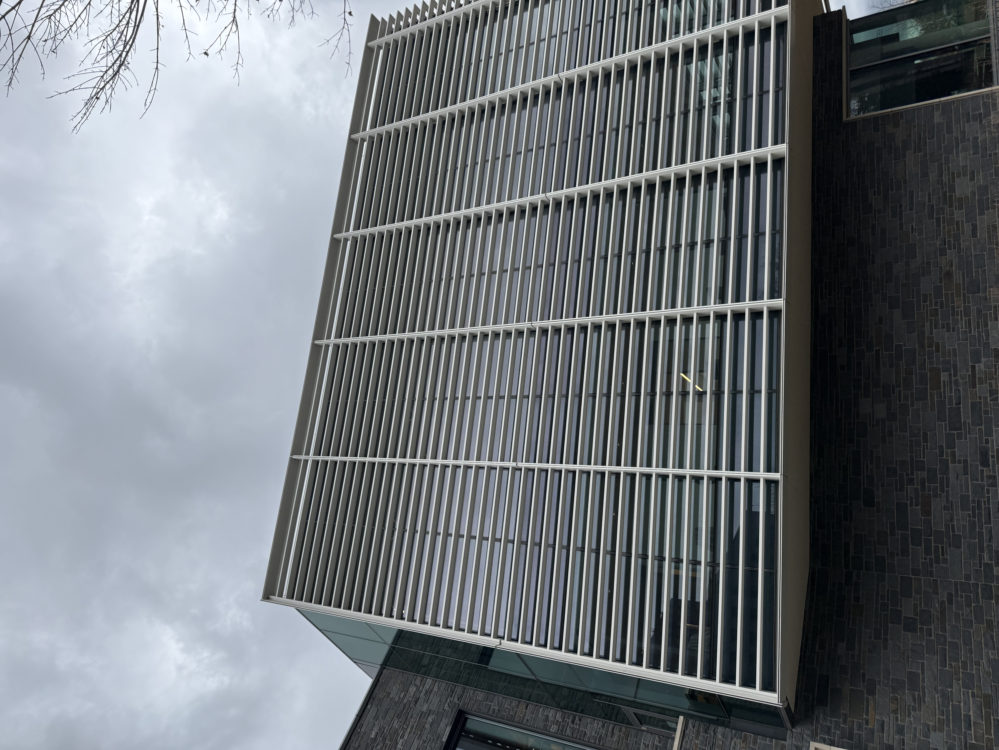
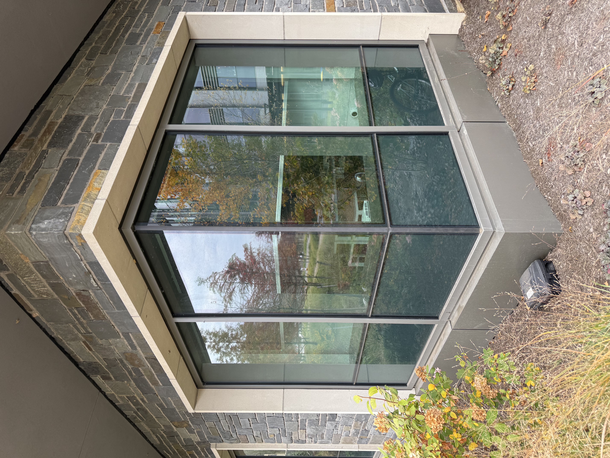
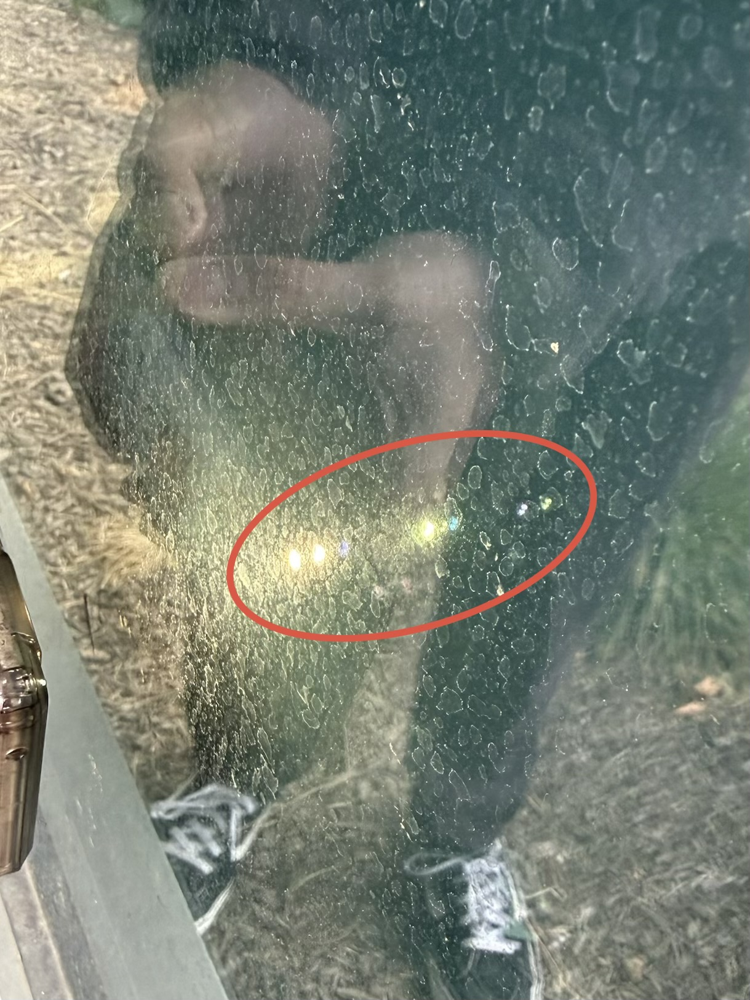

Energy Efficiency Design
Keeping cool in summer. Staying warm in winter. Our comfort comes at an energy cost—and in a changing climate, that cost matters. How can a building protect the people inside while reducing its impact on the world outside? At Princeton, Briger Hall’s answer begins with an ancient invention: windows. Three layers of glass, sunshading, and heating and cooling controls that respond when windows open turn this familiar feature into a powerful tool for saving energy. When exploring Briger Hall, look closely: the windows do more than frame the view. They help shape a more sustainable future.
Find it
Where to find the sunshades: Check out the Commons Library on the East end of Briger!

Where to find the triple glazed windows: Check out the West end of Briger!

Look closely: Do you see the six reflections showing the three glass panes?

Why is it interesting?
Our observation: Inside the Commons library, despite the sunshaders, plenty of light is let through by the large windows!
[Explain what you learned about the feature or broader topic. Cite checked background claims here.] [1]
- Benefits of triple glazed glass
- - The inner pane stays closer to room temperature, so people avoid the cold-draft feeling near windows and can sit next to them comfortably in winter.
- - The extra pane and gas gap cut outside noise, which helps in classrooms and offices near roads.
- - Lower heat loss reduces peak heating demand.
- Benefits of Sunshading
- - External shading stops solar energy outside the glass, which is far more effective than blinds inside.
- - Fins, louvers, and overhangs often become a building’s signature look, as it has with the Commons Building.
- Benefits of window-HVAC automated system
- No fighting systems: The building stops chilling air that is leaking out an open window, which eliminates a common source of wasted energy.
- Energy use responds to what occupants actually do rather than to assumptions.
What if Briger Hall had simpler windows?
A hypothetical design with double glazing, no sunshading, and heating and cooling that continued running when windows opened could reduce construction costs. Yet those initial savings could come with higher energy bills and less comfortable rooms—revealing why Briger Hall’s window design matters beyond its appearance.
For people: The appeal of double glazing begins with its price. According to window manufacturer Oknoplast, triple-glazed windows generally cost 40–80% more than double-glazed units. However, the company estimates that upgrades in cold-climate residential settings can save 50–200 per window annually, with payback periods of 8–20 years. These potential savings help explain the long-term value of Briger Hall’s triple glazing: a higher initial investment could mean lower energy costs for years to come. [1]
For the environment people: More sunlight is not always an advantage. Without sunshading, direct sunlight could increase glare and overheating, making classrooms less comfortable and increasing cooling demand. Enviroscreen reports that adding shading can reduce annual cooling energy consumption by 5–30%. This helps explain why Briger Hall’s shading is valuable: keeping unwanted heat outside can ease the burden on cooling systems, improve comfort, and reduce the emissions associated with fossil-fuel energy use. [2][3]
An open window also changes what a room needs from its heating and cooling system. Without responsive controls, the system could continue working while heated or cooled air escaped outdoors. Occupants would retain the freedom to open windows, but preventing energy waste would depend more heavily on remembering to adjust the temperature controls. Briger Hall’s automated connection makes that coordination part of the building’s operation.
The simpler alternative might therefore be cheaper to build, but more demanding to operate. Its potential costs would extend beyond energy bills to the comfort of the people studying and working inside. Briger Hall’s design addresses these connected concerns through an everyday feature, showing how much a carefully designed window can contribute over a building’s lifetime.
What we do not know: [Identify an honest uncertainty or assumption. Explain what condition or missing information could change the comparison.]
Show how you know
- Oknoplast. Double Pane Windows Pros and Cons vs Triple Pane – Which One Should You Choose?. Supports the 40–80% cost premium for triple glazing and estimates of $50–$200 in annual energy savings per window and 8–20-year payback periods in cold-climate residential settings.
- Enviroscreen. Retrofitting Solar Shading to Enhance Energy Efficiency. Supports the reported 5–30% reduction in annual cooling energy consumption from adding shading, along with benefits for glare reduction and indoor comfort.
- PSEG Energy Source - Environmental Information Disclosure. Supports that using more energy from PSEG would result in more coal and natural gas being burned, harming the atmosphere.
Listen and look
Read the complete audio transcript
[Paste the complete transcript here, including the invitation to look, explanation, counterfactual, environmental and human tradeoffs, uncertainty, and visitor question.]
Consider: [Repeat the visitor question from your recording so someone reading without audio can consider it too.]